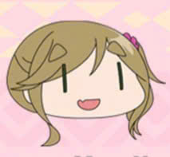
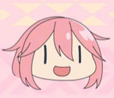
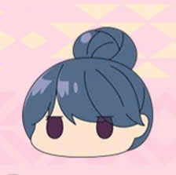
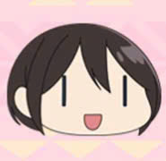
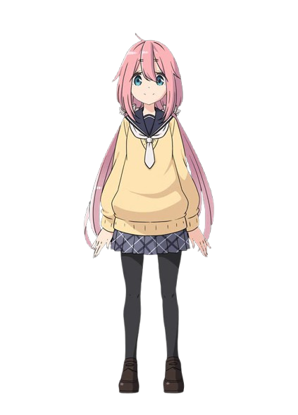
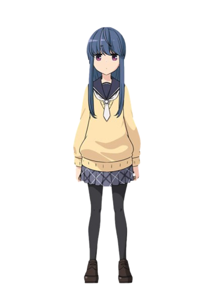
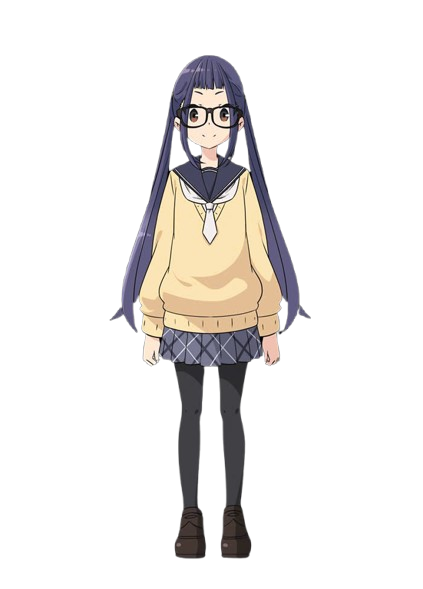
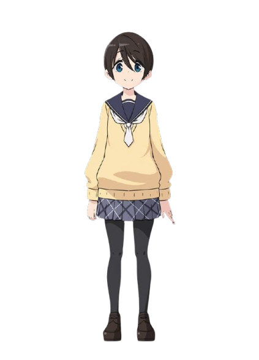

Laid-Back Camp season 1

Khởi đầu - Rin là một cô nàng hướng nội, thích đi cắm trại. Vào một buổi tối đẹp trời ở hồ Motosu, cô nàng đã gặp gỡ một cô gái và lầm tưởng đó là ma.
Chuyến phiêu lưu thảnh thơi bắt đầu từ đây!
Laid-Back Camp season 2

Phần 2 - Lấy bối cảnh giao thoa giữa mùa đông và xuân tiếp theo sau mùa một, các cô gái sẽ trải nghiệm những hoạt động truyền thống chào đón năm mới cùng cô giáo Toba Minato. Trong lúc đó, Rin tới nhà Nadeshiko và gặp một người bạn bí ẩn tự xưng là bạn thuở nhỏ của Nadeshiko. Hãy xem cái hội này sẻ làm gì tiếp nào!
Laid-Back Camp Heya Camp

Ngoại truyện - với thời lượng 5 phút mỗi tập, câu lạc bộ ngoài trời (gồm ba người) sẽ làm một tour ngắn xung quanh các địa điểm du lịch, nhà hàng chủ đề núi Phú Sĩ với mục tiêu tối thượng là sưu tầm đầy đủ các con dấu núi Phú Sĩ!
Laid-Back Camp Movie

Phim dài - Lấy bối cảnh vào lúc các cô gái của chúng ta đã lớn và đi làm. Một hôm, Chiaki mời Rin đi ăn và dẫn Rin đến một bãi đất trống gần nơi họ sinh sống vào thời niên thiếu trong lúc sau bét nhè, các cô gái đã nảy ra ý tưởng cải tạo nơi này thành một bãi cắm trại với view núi Phú Sĩ. Hãy xem các thử thách mà họ hãy đối mặt là gì nào!
Giới thiệu về Yuru Camp
Yuru Camp, hay còn gọi là Laid-Back Camp, là một bộ anime nổi tiếng của Nhật Bản, kể về những cuộc phiêu lưu cắm trại của một nhóm bạn trẻ. Bộ truyện tập trung vào cuộc sống hàng ngày và những trải nghiệm tuyệt vời khi khám phá thiên nhiên qua các chuyến đi cắm trại.
Bộ anime này nổi bật với hình ảnh đẹp mắt, âm nhạc nhẹ nhàng và câu chuyện ấm áp về tình bạn và sự gắn kết với thiên nhiên. Yuru Camp không chỉ mang lại cảm giác thư giãn mà còn truyền cảm hứng cho người xem về việc tận hưởng cuộc sống ngoài trời và khám phá những điều mới mẻ.
Nếu bạn yêu thích thiên nhiên, cắm trại và những câu chuyện nhẹ nhàng, Yuru Camp chắc chắn sẽ là một lựa chọn tuyệt vời để thưởng thức.





Nadeshiko Kagamihara
Nhân vật phụ trong Yuru Camp.
Cô nàng hoạt bát năng động, là máy bào đồ ăn đắc lực của câu lạc bộ, cô đã đạp xe từ nhà tới tạn hồ Motosu, bị lạc và đã gặp Rin

Shima Rin
Shima Rin-Cô nàng lạnh lùng, thường đi cắm trại bằng xe máy, nổi bật với bím tóc cột ở đỉnh đầu. Một hôm, cô bắt gặp Nadeshiko đi lạc, và bộ truyện bắt đầu từ đó

Chiaki Oogaki
Chiaki Oogaki-Cô nàng năng động, luôn mang theo những món ăn ngon để chia sẻ với bạn bè.
Cô là thành viên của câu lạc bộ ngoài trời, có khả năng nấu ăn tuyệt vời và luôn sẵn sàng giúp đỡ mọi người.
Chiaki Oogaki-là hội trưởng câu lạc bộ ngoài trời (gồm ba thành viên), cô là kẻ đầu têu cho hầu hết chuyến cắm trại trong suốt bộ phim và truyện, nổi bật với hai bím tóc đuôi ngựa

Ena Saito
Ena Saito, bạn thân của Rin. Nổi bật với bộ tóc ngắn và chú chó dễ thương tên Chikuwa.
Cô thường là kẻ quấy rối sự yên bình của Rin bằng cách gửi cho câu lạc bộ vị trí của Rin.
Đặc biệt cực kì giàu và lười